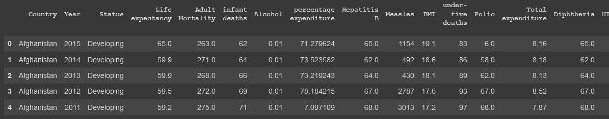

Caso de estudio: Esperanza de vida a nivel global (OMS/WHO)
Durante toda la existencia de la humanidad, las personas se han obsesionado con un único objetivo, vivir más tiempo. Hoy en día, existen miles de estudios sobre los factores determinantes en la cantidad de años que una persona vive y la calidad con la que lo hace. De ese deseo inherente en las personas, es que aparecen datasets como el que vamos a analizar en este caso de estudio. Estos datos fueron tomados directamente de la organización mundial de la salud y poseen datos sobre la esperanza de vida en cada país entre los años 2000 y 2015. Asimismo, muestra datos específicos de estas poblaciones en cada año que, de ser analizada correlacionalmente, nos puede permitir crear modelos y predecir cuanto puede vivir una persona de acuerdo a estos.
Dataset
Como se menciona anteriormente, este dataset tiene datos de todos los paises adheridos a la OMS entre los años 2000 y 2015. Además, para cada uno de esos años y para cada país, contiene los siguientes datos:
- Estado: Si el país se encuentra desarrollado o no.
- Esperanza de vida: Variable objetivo del análisis, cuantos años se vive en promedio.
- Mortalidad en adultos: Cuantas personas entre 15 y 60 años murieron ese año por cada 1000.
- Mortalidad infantil: Muertes de niños (menores de 15).
- Alcohol: Consumo de alcohol en litros (alcohol puro) per capita
- Gasto porcentual: Gasto en salud como porcentaje del producto bruto interno per capita.
- Hepatitis B: Porcentaje de inmunización a la hepatitis B.
- Sarampion(Measles): Casos reportados de sarampión.
- BMI: Promedio de Índice de masa corporal
- Muertes debajo de 5 años: Número de muertes por debajo de los 5 años de edad.
- Polio: Porcentaje de inmunización al polio
- Gasto total: Gasto general del gobierno en salud como un porcentaje del total de gasto gubernamental.
- Diphtheria: Porcentaje de inmunización al tétano.
- HIV/AIDS: Muertes de niños nacidos con sida(entre 0 y 4 años de edad).
- GDP: Producto bruto interno (PBI) en dólares.
- Población: Población del país.
- Delgadez en adolescentes entre 10 y 19 años: Prevalencia de delgadez en adolescentes desde 10 hasta 19 años de edad.
- Delgadez entre 5 y 9 años de eddad: Prevalencia de delgadez de niños entre 5 y 9 años de edad.
- Indice de composición de recursos: Valor de indice de desarrollo humano en términos de composicion de recursos (0 es que un país usa sus recursos ineficientemente completamente y 1 es que un país usa todos sus recursos de la forma más eficiente posible).
- Educación: Número de años de educación en promedio.
Objetivo
Realizaremos un análisis extensivo del dataset utilizando Python con el fin de estudiar y obtener información interesante del dataset. Se recomienda Google Colab para Python por ser gratuito y tener ya instaladas todas las librerías que vamos a necesitar.
Preparación de datos
Como siempre, hay que comenzar analizando y limpiando los datos del dataset. Comenzamos por importar las librerías que vamos a utilizar en el resto del caso de estudio.
import numpy as np
import pandas as pd
import matplotlib.pyplot as plt
import seaborn as sns
import scipy.stats as stats
from scipy.stats.mstats import winsorize
from sklearn.decomposition import PCA
from sklearn.preprocessing import scale
import os
%matplotlib inline
Luego, cargamos el dataset utilizando pandas y usamos el método "head" para obtener un primer vistazo a los datos.
dataset = pd.read_csv('../input/life-expectancy-who/Life Expectancy Data.csv')
dataset.head()

Primero que nada, vamos a utilizar el método "describe" de pandas para obtener una vista estadística de las columnas del dataset:
dataset.describe().iloc[:, 1:]
De esta vista, obtenemos datos muy interesantes, principalmente lo siguiente:
- Mortalidad infantil con un mínimo de 0. Algo prácticamente imposible en cualquier país.
- BMI de mínimo 0 y máximo 87: Anatomicamente imposible tener un indice de masa corporal de 0. Asimismo, un promedio de 87 en una población es imposible, ya que esto constituye un caso muy especial de super obesidad.
- Mortalidad de menores de 5 con un mínimo de 0: Mismo caso que la mortalidad infantil.
- GDP/PBI de mínimo 1.68 dolares: No existe un país tan pobre en el mundo (Es fácil corroborar este dato en internet).
- Delgadez de un 0.1% mínimo: No puede existir una población con más de un 99.9% de la población no delgada.
- Número de años en educación de 0: No puede haber en promedio 0 años de educación
Manejo de outliers
Dada esta vista general, es que con un poco de investigación en internet, podemos decidir rangos arbitrarios en los cuales no consideremos datos como outliers.
- Mortalidad infantil de mínimo 1
- BMI entre 10 y 60
- GDP mayor a 200 dolares (Según las estadísticas, Burundi es el pais con menos PBI con un total de 253 dolares)
- Delgadez mayor a 0.5%.
- Porcentaje de educación mayor a 1 año.
Ya que los nombres de las columnas vienen todos desestandarizados, es que vamos a quitar todos los espacios en ellos y cambiar aquellos espacios intermedios en los nombres por "_". Luego, aplicaremos funciones lambda marcar los datos que consideramos outliers como outliers (los marcamos como NaN).
orig_cols = list(dataset.columns)
new_cols = []
for col in orig_cols:
new_cols.append(col.strip().replace(' ', ' ').replace(' ', '_').lower())
dataset.columns = new_cols
dataset['infant_deaths'] = dataset['infant_deaths'].replace(0, np.nan)
dataset.bmi = dataset.apply(lambda x: np.nan if (x.bmi < 10 or x.bmi > 50) else x.bmi, axis=1)
dataset['gdp'] = dataset.apply(lambda x: np.nan if (x['gdp'] < 200) else x['gdp'], axis=1)
dataset['thinness_1-19_years'] = dataset.apply(lambda x: np.nan if (x['thinness_1-19_years'] < 0.5) else x['thinness_1-19_years'], axis=1)
dataset['thinness_5-9_years'] = dataset.apply(lambda x: np.nan if (x['thinness_5-9_years'] < 0.5) else x['thinness_5-9_years'], axis=1)
dataset['schooling'] = dataset['schooling'].replace(0, np.nan)
Luego, podemos correr la función descriptiva nuevamente para verificar los cambios realizados. Ahora que marcamos aquellos datos outliers como datos faltantes, vamos a hacer una vista general de la cantidad de datos faltantes en el dataset.
dataset.info()
Sabiendo que el total son 2938 datos, vemos como casi todas las columnas tienen menos de 30% de los valores como faltantes, exceptuando bmi, el cual tiene casi un 50% de los valores faltantes. Con este dato, podríamos comprometer el análisis ya que deberemos inferir los valores de la mitad de sus filas en el arreglo de los faltantes, por lo que se toma la decisión de eliminar dicha columna.
dataset.drop(columns='bmi', inplace=True)
Arreglo de datos faltantes
Para arreglar los datos faltantes, vamos a reemplazar, tanto los que marcamos en el paso anterior como los datos que ya estaban en el dataset con el promedio del resto de los datos para cada columna.
Primero, utilizaremos esta funcionalidad de pandas para ver cuales son los atributos con datos faltantes:
print("Datos faltantes dataset:")
print(pd.isnull(dataset).sum())
De este modo, arreglamos los datos faltantes para cada fila que los tenga.
dataset["life_expectancy"].fillna(dataset["life_expectancy"].median(), inplace = True)
dataset["adult_mortality"].fillna(dataset["adult_mortality"].median(), inplace = True)
dataset["infant_deaths"].fillna(dataset["infant_deaths"].median(), inplace = True)
dataset["alcohol"].fillna(dataset["alcohol"].median(), inplace = True)
dataset["hepatitis_b"].fillna(dataset["hepatitis_b"].median(), inplace = True)
dataset["polio"].fillna(dataset["polio"].median(), inplace = True)
dataset["total_expenditure"].fillna(dataset["total_expenditure"].median(), inplace = True)
dataset["diphtheria"].fillna(dataset["diphtheria"].median(), inplace = True)
dataset["gdp"].fillna(dataset["gdp"].median(), inplace = True)
dataset["population"].fillna(dataset["population"].median(), inplace = True)
dataset["thinness_1-19_years"].fillna(dataset["thinness_1-19_years"].median(), inplace = True)
dataset["thinness_5-9_years"].fillna(dataset["thinness_5-9_years"].median(), inplace = True)
dataset["income_composition_of_resources"].fillna(dataset["income_composition_of_resources"].median(), inplace = True)
dataset["schooling"].fillna(dataset["schooling"].median(), inplace = True)
Analisis de los datos
Para comenzar este análisis, vamos a graficar lo más importante para visualizar esta data, la esperanza de vida en función de cada uno de los atributos.
plt.figure(figsize=(15, 20))
for i, col in enumerate(list(dataset.columns)[1:], 1):
plt.subplot(5, 4, i)
plt.plot( dataset_clean[col], dataset_clean['life_expectancy'], 'bo', markersize=1)
plt.title(col)
Debido al ruido de los datos, es bastante difícil ver relaciones entre algunos de los datos. Sin embargo otros, muestran tendencias bastante correlacionadas con lo sabido del tema:
- Los países desarrollados tienen expectativas de vida superiores a los 70 años, a diferencia de los no desarrollados que varían entre 40 y 90.
- En "percentage_expenditure", vemos como los países con mayores gastos en salud, tienen esperanzas de vida muy superiores en general.
- En la gráfica de "schooling" vemos como más años de educación equivalen a mayores esperanzas de vida (probablemente correlacionado a países mejor desarrollados)
- Los países con mayor tasa de muertes por HIV tienen menor esperanza de vida, de lo cual se infiere niveles bajos de educación sexual o falta de recursos.
- Países con mayores GDP (PBI, Producto bruto interno), tienen mejores esperanzas de vida a mayor cantidad.
- En la gráfica de polio, se puede apreciar como a mayores niveles de vacunación, hay mayores niveles de esperanza de vida. Mismo comportamiento que en la gráfica de vacunación contra la hepatitis B.
- La gráfica de "Income composition of resouces", es decir, que tan productivo uso hacen los países de sus recursos, muestra como a mayor índice, mayores niveles de vida.
De las observaciones anteriores, quizas podríamos generalizar diciendo
que los factores que más afectan a la esperanza de vida, son los
económicos y los de prevención en salud.
A continuación, crearemos una matriz de correlación para poder sacar
mayores conclusiones.
plt.figure(figsize=(20,15))
sns.heatmap(dataset.corr(), square=True, annot=True, linewidths=.5, cmap="Oranges")
plt.title("Matriz de correlación")
plt.show()
Viendo la segunda columna o la segunda fila, podemos analizar la correlación de los atributos con la salida, life_expectancy. Curiosamente, vemos como los factores con mayor correlación son aquellos relacionados a lo económico y la salud, como habíamos visto antes.
Los que más destacan son:
- Correlación con schooling: 74%, como mencionamos anteriormente, quizas no es el hecho de tener educación sino que el haber educación es una consecuencia de la economía y por tanto, la correlación está más basada en el estado de desarrollo del país.
- Income composition of resources: 69%, tal cual hablamos anteriormente, la economía de un país impacta enormemente en la esperanza de vida, ya que a mejor uso de recursos, mayor inversión es hospitales y salud en general.
- GDP: 42%, misma conclusión que la anterior, mas dinero implica más gastos en salud.
- Polio(vacunacion): 46%, el mayor uso de vacunas para estas enfermedades mortales obviamente disminuye el riesgo de muerte.
- Diftería(vacunación): 47%,. misma conclusión que la anterior.
Además, podemos ver correlaciones inversas (cuando una decrece, la otra crece y viceversa) grandes en los aspectos más relacionados a la muerte:
- HIV con -56%, implicando que a mayores muertes en un país por SIDA, mayores muertes en general. Implicación de la falta de educación en países subdesarrollados.
- Mortalidad adulta: -70%. Esta estadística es obvia que influya tanto ya que la mayoría de los seres humanos estan compuestos por adultos (+18), lo cual hace que el hecho de tener una alta mortalidad adulta implique una alta mortalidad general.
Finalmente, este dataset trae algunos datos curiosos que van en contra de lo que uno podría concluir en la teoría:
-
Consumo de alcohol: 39%. Al ser una correlación positiva, indica que los consumos medios/altos de alcohol, podrían tener consecuencias positivas en la esperanza de vida. Si revisamos en las gráficas anteriores, vemos como este es el caso para los consumos medios de alcohol. Quizás, podemos concluir que tiene que ver con su propiedad antiscéptica, es decir, su uso para combatir infecciones.
-
Población: -0.29%. La población en si, no tiene ningun efecto en la esperanza de vida de las personas de un país. A veces uno piensa que la distribución de recursos va en cuanto a la gente que hay en un país ya que a menos personas menos producción pero también hay que considerar que eso implica menor consumo, lo cual hace que haya un balance entre producción y consumo en la mayoría de los países. Por lo tanto, la población en si como factor, afecta mínimamente en la esperanza de vida de una persona.
Modelado
Preparación de modelado
Para el modelado, utilizaremos Rapidminer. Primero que nada, exportamos los datos preprocesados en python utilizando la función de Pandas para guardar un dataframe como csv.
dataset.to_csv("./Life Expectancy Clean.csv")
Luego de tener el CSV, nos vamos a Rapidminer, donde importaremos el CSV como un archivo delimitado por comas. Si ocurre que aparece una columna extra "atr1" conteniendo el número de fila de cada una, lo eliminaremos ya que no nos servirá en nuestro análisis.
Una vez importado el proceso, deberemos realizar algunas modificaciones para preparar el modelado:
-
Agregar un bloque Discretize by user input, esto nos permitirá redefinir datos numéricos como datos polinomiales. En este caso la salida de nuestro modelo será la esperanza de vida, el problema surge en que un modelo no puede tener una salida numérica ya que implicaría una clase por número y es muy raro que estos se repitan. Este bloque nos permitirá definir rangos de números como clases para nuestro modelo. En este ejemplo, se define de la siguiente manera cada clase:
- Low expectancy (Baja esperanza de vida): upper limit: 60 años.
- Mid expectancy (Esperanza media de vida): upper limit: 80 años.
- High expectancy (Alta esperanza de vida): upper limit: 100 años.
-
Un bloque Set role para marcar la transformada columna "life expectancy" en nuestra label (salida).
-
Un bloque Normalize para normalizar nuestros datos que resultan ser todos numéricos. Usaremos el método "Range transformation" y lo haremos entre 0 y 1.
Creación de modelos
En este caso de estudio, se opta por el uso de la técnica de ensambles para crear modelos. Esta técnica se presenta como el uso en colaboración de varios modelos distintos que se entrenen con la data de entrada y en conjunto luego, tomen decisiones en base a la clasificacion de la misma.
Crearemos ensambles con tres técnicas distintas:
-
Bagging: Técnica basada en el uso de la selección aleatoria de un porcentaje de la data de entrenamiento en varios modelos distintos con el fin de luego crear una salida conjunta en la cual se decida la salida final basada en la media de las decisiones de todos los modelos. Como técnica es buena cuando se tiene conjuntos de entrenamiento grandes, su problema radica en que usa siempre las mismas caracteríticas (atributos) en sus modelos, lo cual lo hace débil con datasets con muchas features.
-
Boosting: Boosting busca eliminar los problemas de la técnica de Bagging. La diferencia radica en que luego de entrenar un modelo, este marca aquellas entradas del dataset que no puedo clasificar correctamente o que tuvo dificultades para decidir su clase. De este modo, les da un cierto peso que hace que el siguiente modelo que tome datos al azar del dataset, tenga más probabilidad de tomar aquellos que fueron marcados por el modelo anterior. Asimismo, en cada iteración se entrenan todos los modelos con el dataset tomado en esa iteración, es decir, una vez que el modelo 1 marca las entradas con más peso y el modelo 2 selecciona su conjunto de entrenamiento basado en esa información, el modelo 1 y el 2 son entrenados con el conjunto elegido por el 2. Luego de ser entrenados y testeados, generan una salida en conjunto al igual que Bagging y además marcan aquellas entradas que ahora fueron mal clasificadas para que usen el siguiente modelo y los anteriores. La técnica aumenta mucho más la performance permitiendo entrenar modelos con mayor diversidad, reduciendo significativamente el overfitting.
-
Random Forest: Al igual que boosting, es una técnica basada en Bagging pero además de datos aleatorios, utiliza atributos aleatorios. Además, esta se implementa con decision trees exclusivamente, de ahí su nombre. La ventaja que tiene sobre el resto es la parte de los atributos aleatorios. Supongamos que creamos modelos con las técnicas anteriores utilizando árboles de decisión. En los casos de ambas técnicas, como siempre utilizan los mismos atributos, es muy probable que la gran mayoría de los árboles creados terminen siendo iguales o con un comportamiento muy similar. En random forest, esto no ocurre, ya que al randomizar los atributos utilizados en cada submodelo, impedimos que los árboles se construyan de igual manera, además de hacer al modelo final virtualmente inmune al overfitting. Reduce enormemente la correlación entre los árboles creados.s
Al final de este artículo, se encontrará un link al proceso de Rapidminer completo para poder visualizarlo y ajustarlo.
Resultados
Con el fin de estudiar el comportamiento de los algoritmos descritos anteriormente, es que se decide entrenar al modelo con las tres técnicas, en todas, utilizando árboles de decisión.
Se corren Bagging y Boosting con 50 iteraciones cada uno y Random Forest, debido a su naturaleza de no provocar overfitting, con 1000. Todos se corren con la misma semilla de Rapidminer para asegurar que todos tengan las mismas condiciones iniciales.
Resultados Bagging:
Resultados Boosting:
Resultados Random Forest:
Como podemos ver, los resultados indican lo visto en la teoría, Bagging es el que se comporta peor de los tres y Boosting y Random Forest al hacer esas modificaciones randómicas llegan a mucho mayores porcentajes de acierto en el conjunto de test. Asimismo se ve como Random forest tiene un poco más de performance que Bagging, probablemente por el hecho mencionado anteriormente del uso de atributos.
Mejoras
Con el fin de simplificar este modelado, se utilizaron casi todas las opciones por default en todos los bloques de modelado mencionados. Ahora que tenemos el de mejor rendimiento, podemos utilizar el bloque de optimize parameters grid. Esto nos permitirá que Rapidminer cree y pruebe un conjunto acotado de configuraciones del bloque y devuelva aquella configuración con la mayor performance. En este caso, variaremos el número de iteraciones del modelo y el uso de podado en los árboles de decisión (Este proceso es muy pesado en la CPU, dependiendo de cual se usa, puede tardar de minutos a horas).
Resultados Mejora:
Los resultados resultaron ser un poco mejores que el modelo anterior, esto se logró con el uso de 3000 árboles (iteraciones) y sin la utilización de podado. Esto parece indicar que el uso de más árboles mejora la decisión, sin embargo, luego se hace una prueba con 5000 árboles y genera los mismos resultados. Esto quiere decir que en un principio se utilizó pocos árboles y que la cantidad, por lo menos para este dataset y modelo, debe superar los 3000 árboles.
Conclusiones
- Se hacen preparaciones de data basados en la teoría detras de la ingeniería de datos y en suposiciones realizadas en cuanto a lo sabido del universo del dataset.
- Se hace un análisis de los datos finales y se realizan conclusiones sobre los datos presentados.
- Utiilizando el método de ensambles, logramos crear un modelo con un 96% de certeza en la clasificación de datos nuevos, lo cual nos permite en un futuro poder predecir la esperanza de vida de un país dado un conjunto de atributos.